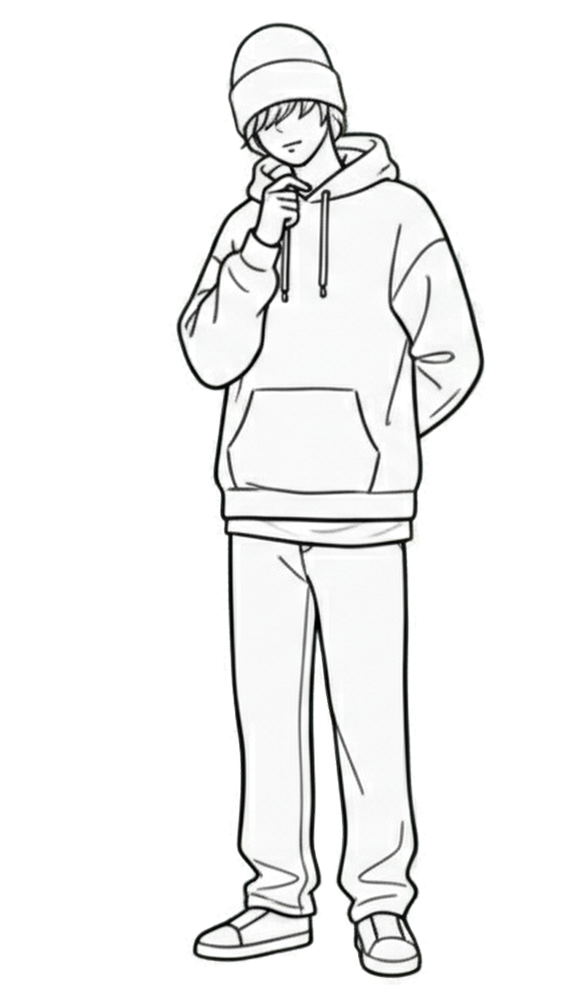
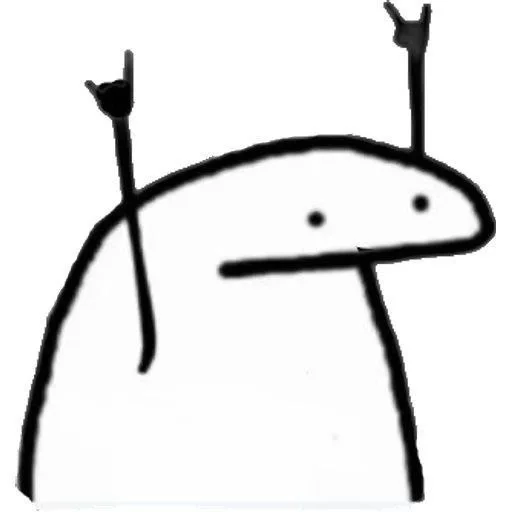

{ API }
</>
HTTP · 200 OK
وش
يعني
API؟
الكلمة ممكن تبان معقدة وتقنية شوي

أبسط مما تتوقع!
تخيل إنك...

أنت (الطاولة)
المطبخ (الأكل)


ممنوع تدخل المطبخ!
صح؟

النادل (الوسيط)
الطلب
الأكل


خرائط
UBER / API
API
هو نفسه بالضبط بين التطبيقات

سلة · Salla
تطبيق أول
API
Pay
أنظمة التطبيق
التطبيقات بشكل عام
نرجع للنادل!

✖ ممنوع الدخول المباشر

طلب ➔ Request
⬅ الرد Response

سلة
n
a
Pay
متجر إلكتروني
سماعة احترافية
فاتورة #402
400 SAR
اختر وسيلة الدفع:
الدفع عبر تابي
4 دفعات بدون فوائد
tabby
تم الدفع بنجاح ✓

Tabby API Engine
معالجة الطلب
تقسيم تلقائي على 4 دفعات
API 200 OK
Q1
Q2
Q3
Q4
100
SAR · 1
100
SAR · 2
100
SAR · 3
100
SAR · 4


وهذا هو الـ API
تطبيق 1
تطبيق 2
جسر الـ API
بدون ما يشوف أحد تفاصيل الثاني
تابعنا الآن ↗
لشروحات تقنية أكثر